ბიოგრაფია
ფრანსუა ვიეტი იყო ფრანგი მათემატიკოსი, რომელიც დაიბადა XVI საუკუნეში. განათლებით იურისტი იყო, თუმცა მსოფლიო აღიარება მათემატიკაში მოღვაწეობამ მოუტანა. იგი ითვლება თანამედროვე ალგებრის ერთ-ერთ ფუძემდებლად.
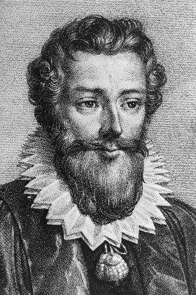
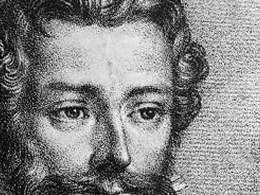
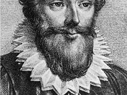
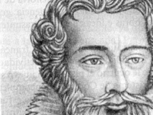
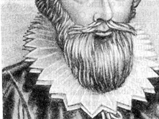
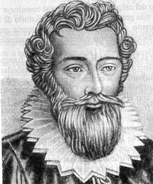
მოღვაწეობა
ვიეტი ძირითადად მუშაობდა ალგებრისა და ტრიგონომეტრიის სფეროებში. მან პირველმა დაიწყო ასოების სისტემატური გამოყენება რიცხვების აღსანიშნავად, რაც მათემატიკური ჩანაწერების მკვეთრად გამარტივებას ემსახურებოდა.
მიღწევები
ვიეტმა შექმნა სიმბოლური ალგებრის საფუძვლები და ალგებრული განტოლებების ჩაწერის ახალი ფორმა. მისმა მიდგომამ შესაძლებელი გახადა რთული ამოცანების უფრო მარტივად და ზოგადად გადაწყვეტა.
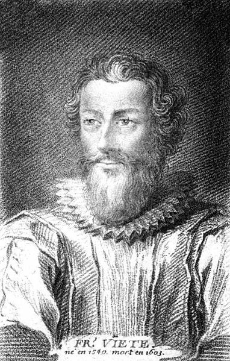
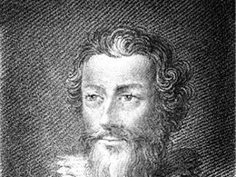
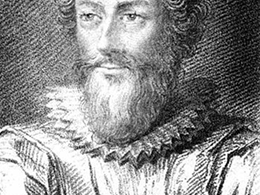
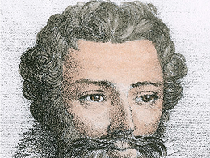
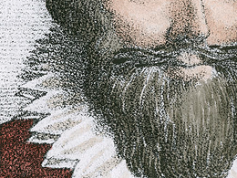
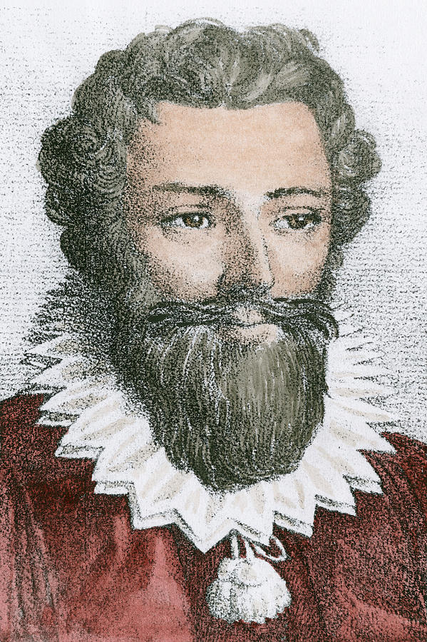
თეორემა
ფრანსუა ვიეტმა შექმნა თეორემა, რომელიც აღწერს კავშირს ალგებრული განტოლების ფესვებსა და მის კოეფიციენტებს შორის. ამ თეორემის მიხედვით, ფესვებზე ინფორმაცია უშუალოდ განტოლების ჩანაწერიდან მიიღება, მათი ცალკე გამოთვლის გარეშე. ვიეტის თეორემა ალგებრის ერთ-ერთი ძირითადი საფუძველია და ფართოდ გამოიყენება განტოლებების ანალიზში.
ფაქტები
ვიეტი ცნობილია არა მხოლოდ როგორც მათემატიკოსი, არამედ როგორც კოდების გამშიფრავი. მან წარმატებით გაშიფრა რთული საიდუმლო წერილები, რაც მის ინტელექტუალურ შესაძლებლობებზე მეტყველებს.
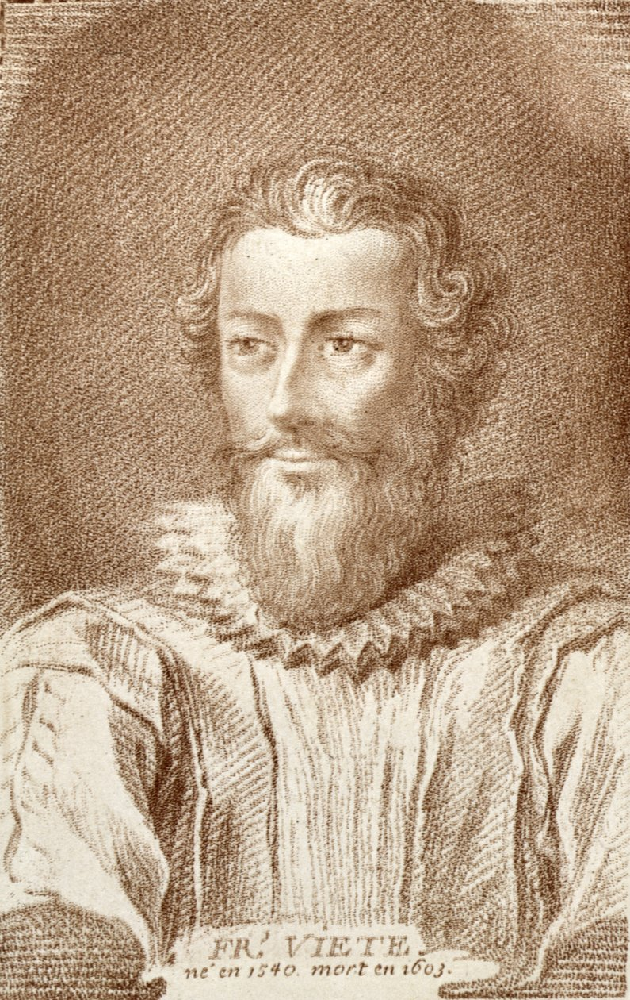
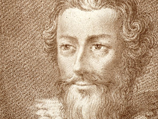
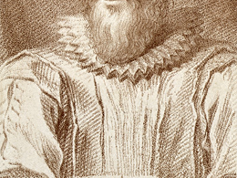